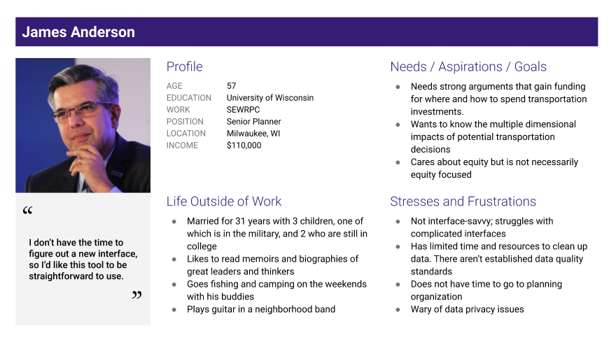
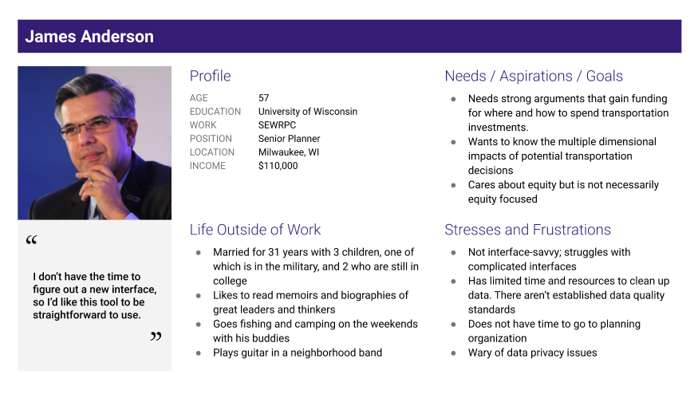

Transportation Equity Open Knowledge Network
Role: UI/UX Designer, User Researcher
The Transportation Equity Open Knowledge Network — “TEOKN” — is a knowledge network that integrates datasets and enables peer learning. It serves stakeholders' (policymakers, researchers, data scientists) desire to automatically ingest datasets from various sources and learn other cities’ ideas of transportation policymaking
This project is sponsored by the National Science Foundation and is a partnership between the Gerald R. Ford School of Public Policy and the University of Michigan Transporation Research Institute.

In my role, I worked with a team of professionals to create interactive website mockups in Figma for the Phase I Prototype of the project.
Initial Research
- Data needs to be detailed and digestible, and it should be able to be shared; however, there are privacy challenges
- Users with similar interests and needs want to be able to learn from each other. Users aren't necessarily in adjacent positions or organizations
- Users want an understanding of equity measures and the magnitude of inequality; absence of data complicates this
These observations were collected and organized into an affinity chart, then synthesized into user personas which were used to inform our platform design.
 

The following are mid-fidelity mockups of the public-facing TEOKN database.
In order to develop these, we first created basic wireframes with layouts inspired by research into websites in related fields, such as the Shared Mobility Use Center and the Open Data Network.
Using observations from the initial design research, I helped create, ideate, and refine our visual designs and interactions in order to create a finalized prototype for demonstration at the NSF Expo.


Currently, I am working with a small team of developers to align the public-facing site with our prototypes.